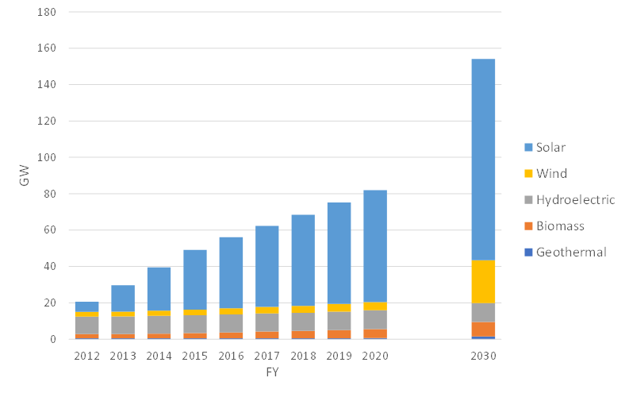
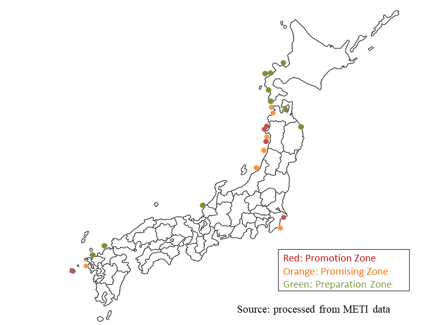

Current Status and Future of Renewable Energy in Japan
12/16 2022
Author: Kazuhiro Okuma
Japan was the world leader in the development and introduction of solar power in the 1970s and 1980s. Subsequently, the driving force behind the introduction of renewable energies shifted to Europe, and then China, and Japan's presence in this field declined. In recent years, however, the introduction of renewable energy has accelerated again in Japan, with the aim of further significant introduction in the future. We take a look at the situation.
Figure 1 shows the trend of renewable energy generation capacity from 2012 to the present and the target for 2030, along with a breakdown by type of renewable energy. The experience of the Great East Japan Earthquake in 2011 triggered the introduction of a feed-in tariff (FIT) in 2012, and the introduction of renewable energy has accelerated dramatically. The growth rate from 2012 to 2020 is about 17% per year and the increase is about 7 GW per year, indicating rapid expansion.
Following the decision in 2020 to aim for carbon neutrality in 2050, the Basic Energy Plan, which aims to make renewable energy the main source of power, was decided and the energy mix policy was set to provide 36-38% of electricity from renewable energy in 2030. The power generation capacity and breakdown in this policy are shown on the right side of Figure 1.

Note: The value of FIT introduction until 2020, the value of energy mix in the 6th Energy Strategic Plan in 2030. Large-scale hydroelectric are excluded.
Looking at the policy until 2030 compared to the previous transition, the speed of expansion is about 7% per year in terms of growth rate and about 7 GW per year in terms of increase, which is the same rapid expansion policy. On the other hand, looking at the type of renewable energy, a different policy can be clearly seen. While solar power has been the main source of expansion to date, wind power is expected to expand most significantly toward 2030.
Japan has large potential for offshore wind and geothermal power, but it takes time for these to be introduced. For this reason, solar PV has progressed first since the introduction of the FIT in 2012. However, in order to make renewable energy the main source of power, we cannot rely solely on solar power. A goal has been set for a significant introduction of wind power, equivalent to an expansion of about 18% per year. Policies are being implemented to achieve this goal. For example, based on the Offshore Wind Power Generation Act, areas with high potential are being zoned sequentially, and offshore wind power generation is being located in stages. Figure 2 shows the status of zoning based on this law.

As a result of these goals and policies, the introduction of renewable energy in Japan is expected to further accelerate. Solar power will continue to grow, but offshore wind power in particular is expected to expand markedly. This is not only a climate change measure, but also a major business opportunity for related industries. The renewable energy industry is globalizing, and the expansion of Japan's renewable energy market is attracting attention from businesses around the world.